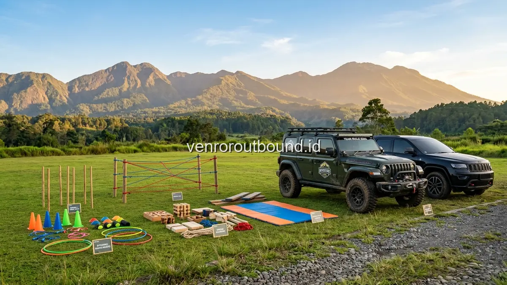

1. Mengenal Konsep Paket Outbound Plus Offroad untuk Acara Korporat
Jawaban singkat: Paket Outbound Plus Offroad dari Vendor Outbound menyajikan pengalaman petualangan ganda yang memadukan simulasi teamwork di lapangan hijau dengan petualangan jeep offroad menjelajahi keindahan alam Batu dan Bromo. Program ini dirancang fleksibel untuk rombongan perusahaan dengan koordinasi armada, pemandu profesional, dan penyesuaian fasilitas lengkap melalui paket outbound plus offroad.
Bagi perusahaan yang sering mengadakan agenda annual gathering, menyelenggarakan aktivitas outbound di hamparan lapangan rumput yang sama dari tahun ke tahun terkadang menimbulkan kejenuhan di kalangan karyawan. Di sisi lain, mengadakan tur wisata pasif murni tanpa adanya sesi dinamika kelompok sering kali gagal membangun bonding antardepartemen yang mendalam.
Konsep Outbound Plus Offroad hadir sebagai formula ideal untuk mengatasi kedua tantangan tersebut. Skema program ini mengintegrasikan dua atmosfer berbeda dalam satu hari kegiatan: sesi penguatan sinergi tim yang terstruktur di lapangan pada paruh pertama hari, dilanjutkan dengan petualangan konvoi jeep 4x4 melintasi panorama alam terbuka pada paruh kedua hari.
2. Contoh Rundown Rangkaian Kegiatan Outbound Plus Offroad (1 Hari)
Setiap perusahaan memiliki tujuan internal yang unik, mulai dari perayaan pencapaian target kerja hingga pembentukan kepemimpinan baru. Berikut adalah contoh alur kegiatan yang umum diterapkan sebagai referensi perencanaan bagi panitia:
| Sesi Waktu | Nama Agenda | Fokus Aktivitas & Pengalaman | Output yang Diharapkan |
|---|---|---|---|
| 08.00 - 08.30 | Kedatangan & Registrasi | Penyambutan peserta, pembagian bandana tim, dan welcome drink segar. | Kesiapan fisik dan antusiasme awal. |
| 08.30 - 09.15 | Ice Breaking & Grouping | Pencairan suasana dengan dinamika komunal dan pembentukan armada kelompok. | Mencairkan sekat hierarki jabatan kantor. |
| 09.15 - 11.15 | Core Team Building Games | Simulasi tantangan kolaboratif, pemecahan masalah, dan kepemimpinan bergiliran. | Penguatan koordinasi dan komunikasi efektif. |
| 11.15 - 11.45 | Debriefing & Refleksi | Fasilitator memandu penarikan nilai pembelajaran untuk dunia kerja. | Internalisasi komitmen kerja sama tim. |
| 11.45 - 13.00 | Istirahat, Sholat & Makan Siang | Menikmati sajian prasmanan khas nusantara di area pendopo/resto venue. | Pemulihan energi dan interaksi informal santai. |
| 13.00 - 13.20 | Safety Briefing Offroad | Instruksi keselamatan, pembagian armada jeep (4–5 orang), dan perkenalan driver. | Pemahaman standar kepatuhan di atas kendaraan. |
| 13.20 - 15.30 | Jelajah Alam Jeep Adventure | Konvoi melintasi trek tanah, hutan pinus/perkebunan, ceruk air, dan rest spot foto. | Pelepas stres, sensasi petualangan, dan kebersamaan. |
| 15.30 - 16.00 | Closing & Foto Bersama | Apresiasi keberhasilan seluruh tim, penyerahan suvenir, dan penutupan acara. | Kenangan positif dan motivasi kerja baru. |
3. Keunggulan Integrasi Dua Aktivitas bagi Budaya Perusahaan
Mengapa format gabungan ini sangat diminati oleh para praktisi HR dan Event Organizer? Berikut adalah empat manfaat utamanya:
- Variasi Ritme Kegiatan: Peserta tidak merasa lelah monoton di satu tempat. Perubahan dari aktivitas fisik dinamis di lapangan menuju petualangan berkendara di alam memberikan efek penyegaran psikologis yang optimal.
- Ikatan Emosional Lebih Erat: Duduk bersama 4–5 rekan kerja di dalam kabin jeep selama 2 jam melintasi jalur bergelombang memicu tawa, obrolan akrab, dan saling tolong-menolong yang mempererat rasa persaudaraan.
- Dokumentasi Visual Spektakuler: Latar belakang alam pegunungan, hutan pinus, atau lautan pasir kaldera Bromo menghasilkan konten foto dan video gathering yang sangat representatif untuk media sosial dan arsip internal kantor.
- Efisiensi Waktu dan Anggaran: Menggabungkan sesi pelatihan karakter dan sesi wisata rekreasi dalam satu paket terpadu jauh lebih efisien dibandingkan menyelenggarakan dua acara terpisah.

4. Konsep Destinasi Populer: Nuansa Sejuk Kota Batu vs Keagungan Bromo
Vendor Outbound menyediakan fleksibilitas penentuan lokasi berdasarkan profil rombongan dan durasi acara yang dimiliki perusahaan:
1. Destinasi Kawasan Wisata Kota Batu
Kota Batu sangat ideal untuk program 1 hari (one-day trip) atau 2 hari 1 malam dengan akses mudah dari Surabaya dan Malang. Jalur offroad di Batu melintasi kawasan hutan pinus Coban Rondo, lereng Panderman, dan perkebunan apel dengan udara sejuk serta fasilitas akomodasi hotel bintang yang sangat beragam di sekitarnya.
2. Destinasi Eksotisme Kawasan Bromo
Kawasan Taman Nasional Bromo Tengger Semeru menawarkan lanskap vulkanik dramatis yang tak tertandingi. Paket ini sangat cocok untuk program gathering 2 hari 1 malam (2D1N) dengan agenda melihat matahari terbit (sunrise), menjelajahi lautan pasir berbisik, Bukit Teletubbies, dan kawah aktif Bromo.
5. Panduan Integrasi Venue, Akomodasi, dan Konsumsi untuk Gathering Terpadu
Keberhasilan sebuah acara gathering perusahaan yang menggabungkan outbound dan offroad sangat dipengaruhi oleh kelancaran logistik antar-lokasi. Vendor Outbound menyusun paket terintegrasi dengan mempertimbangkan jarak tempuh yang efisien antara penginapan, lapangan aktivitas, dan pintu masuk jalur offroad:
- Efisiensi Rute Transit: Memilih hotel atau resort yang berjarak maksimal 15–25 menit dari titik awal konvoi offroad, sehingga peserta tidak kelelahan akibat waktu perjalanan transit yang terlalu panjang.
- Kesiapan Fasilitas Venue Lapangan: Memastikan lapangan team building pagi hari memiliki kontur rumput hijau yang rata, sistem drainase air yang baik saat musim hujan, area teduh untuk istirahat, serta fasilitas toilet yang bersih dan higienis.
- Manajemen Nutrisi dan Hidrasi: Menyediakan pasokan air mineral yang memadai di setiap unit jeep, makanan ringan berenergi, serta menu makan siang bernutrisi seimbang khas kuliner lokal Jawa Timur untuk memulihkan stamina peserta.
6. Penerapan Program untuk Berbagai Sektor Industri Perusahaan
Paket Outbound Plus Offroad telah terbukti fleksibel dan adaptif untuk berbagai kebutuhan korporasi lintas industri:
- Sektor Perbankan & Finansial: Menitikberatkan pada simulasi kepatuhan prosedur, ketelitian manajemen risiko di lapangan, dan penyegaran mental dari target finansial yang ketat.
- Industri Teknologi & Startup: Menitikberatkan pada kecepatan adaptasi tim, agilitas pemecahan masalah (problem solving), dan peruntuhan silo komunikasi antardivisi engineering dan bisnis.
- Perusahaan Manufaktur & FMCG: Menitikberatkan pada kedisiplinan operasional, koordinasi rantai komando, dan penguatan loyalitas kerja antarkaryawan senior dan junior.
7. Pilihan Skema Paket Outbound Plus Offroad (Hemat, Standard, Premium)
Untuk mengakomodasi fleksibilitas alokasi anggaran dan tujuan spesifik masing-masing perusahaan, Vendor Outbound menyediakan tiga opsi tingkatan paket yang dapat dikustomisasi secara transparan:
- Skema Paket Hemat (One-Day Practical): Dirancang untuk efisiensi anggaran tanpa mengurangi esensi keselamatan. Mencakup program team building 3 jam di lapangan, sewa armada jeep 4x4 untuk rute pendek (1.5 jam), fasilitator utama, makan siang box nusantara, dan air mineral.
- Skema Paket Standard (Full-Day Interactive): Paket paling populer untuk rombongan kantor menengah. Mencakup games team building komprehensif berfasilitas audio sound system lapangan, rute offroad medium (2–2.5 jam) dengan rest spot panorama, makan siang prasmanan di pendopo resto, snack break tradisional, dan spanduk selamat datang.
- Skema Paket Premium (2D1N Exclusive Retreat): Paket lengkap untuk corporate gathering eksklusif. Mengintegrasikan penginapan resort bintang di Batu atau Bromo, team building tematik berstandar tinggi, konvoi jeep offroad jalur lengkap, gala dinner malam keakraban dengan panggung hiburan, serta liputan dokumentasi video drone profesional.
8. Tahapan Koordinasi Pemesanan dari Pra-Acara hingga Pelaksanaan
Panitia gathering internal maupun Event Organizer mitra dapat mengikuti alur koordinasi terstruktur berikut untuk memastikan persiapan berjalan tanpa hambatan:
- Konsultasi Kebutuhan Awal (D-30 s/d D-14): Diskusi konsep, penentuan tanggal, estimasi peserta, dan pemilihan lokasi via WhatsApp atau pertemuan daring.
- Penyusunan dan Pengesahan Proposal (D-14 s/d D-7): Tim Vendor Outbound mengirimkan dokumen penawaran detail beserta rundown kegiatan, rincian biaya, dan syarat operasional.
- Technical Meeting & Final Checklist (D-3): Koordinasi final mengenai pembagian kamar akomodasi, susunan kelompok armada jeep, dan antisipasi kondisi khusus peserta.
- Eksekusi Hari-H: Tim fasilitator lapangan dan koordinator konvoi memandu jalannya seluruh rangkaian acara secara profesional dan tepat waktu.
9. Faktor Penentu Investasi Paket & Checklist Data Pemesanan
Dalam menyusun proposal penawaran, Vendor Outbound tidak menggunakan sistem harga kaku satu ukuran untuk semua. Biaya dihitung secara proporsional dan transparan berdasarkan parameter teknis berikut:
- Jumlah Peserta & Kebutuhan Armada: Menentukan jumlah unit armada jeep yang disiapkan (asumsi rata-rata 4–5 orang per kendaraan sesuai brief armada).
- Pilihan Venue & Retribusi Jalur: Sewa lapangan eksklusif, izin masuk kawasan konservasi, atau tiket terusan wisata alam.
- Menu Konsumsi & Refreshment: Pilihan paket menu prasmanan, coffee break tradisional, hingga kelengkapan air mineral selama perjalanan.
- Fasilitas Pendukung: Kebutuhan panggung mini, sound system lapangan, media backdrop, hingga tim fotografer dan videografer drone profesional.
Checklist Informasi yang Perlu Dikirimkan Panitia / EO:
Untuk mempercepat proses pembuatan dokumen proposal resmi, panitia internal dapat menyiapkan rincian dasar berikut:
- Perkiraan tanggal pelaksanaan acara.
- Estimasi total jumlah peserta rombongan.
- Kota asal keberangkatan dan pilihan destinasi (Batu / Bromo).
- Rentang usia dominan peserta dan catatan kebutuhan khusus.
- Durasi program yang diinginkan (1 Hari / 2 Hari 1 Malam).
- Tujuan utama kegiatan (rekreasi murni, leadership, atau apresiasi target).
Dapatkan Proposal Penawaran Paket Outbound Plus Offroad
Konsultasikan kebutuhan tanggal, jumlah armada, dan konsep kegiatan kantor Anda. Tim representatif VENDOR OUTBOUND siap mengirimkan rancangan proposal detail dalam waktu cepat.
Minta Proposal via WhatsApp10. Kesimpulan: Investasi Terbaik untuk Memperkuat Sinergi Perusahaan
Paket Outbound Plus Offroad bukan sekadar perjalanan rekreasi biasa, melainkan media strategis untuk menyatukan visi, membangun kembali semangat kerja bersama, dan memberikan apresiasi terbaik bagi seluruh karyawan. Sinergi antara dinamika team building di lapangan dan sensasi petualangan jeep offroad di alam terbuka menciptakan kenangan kolektif yang tak ternilai harganya.
Hubungi konsultan Vendor Outbound hari ini untuk mendiskusikan kustomisasi paket terbaik yang sesuai dengan anggaran, tujuan organisasi, dan profil rombongan perusahaan Anda.
Pertanyaan Sering Diajukan (FAQ)

Arby Ardiansyah
Arby Ardiansyah menulis konten informatif mengenai outbound, team building, corporate gathering, wisata outdoor, dan perencanaan kegiatan kelompok berbasis standar manajemen risiko terpadu di Indonesia.